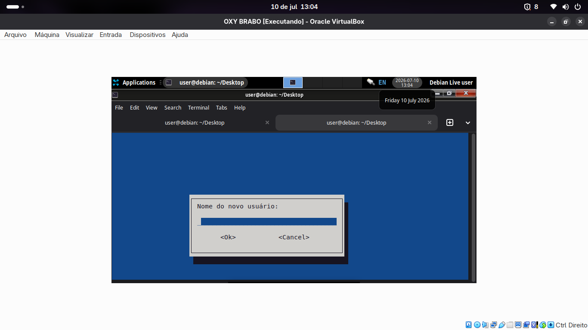
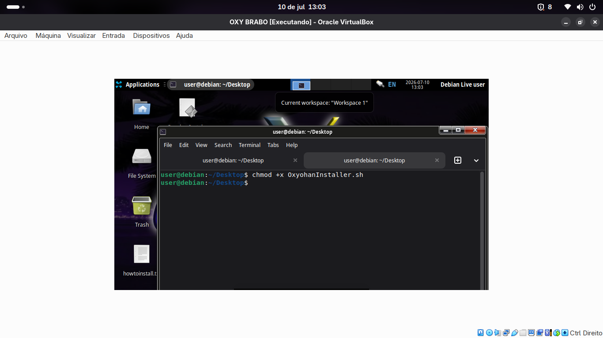

Essa build foi uma tentativa de fazer um instalador funcional via script bash só que infelizmente não deu certo porque o grub falhava (MALDITO GRUB!!!!)
Ele só tinha uma interfaçe SECA SECA SECA com poucas etapas (Usuário, Grub, Partição e Instalação)
Infelizmente essa build se perdeu e lost media e nunca poderemos ve-la em uma vm mas essas são as únicas imagens dela

Essa imagem é dela configurada com os temas e com o terminal do XFCE aberto